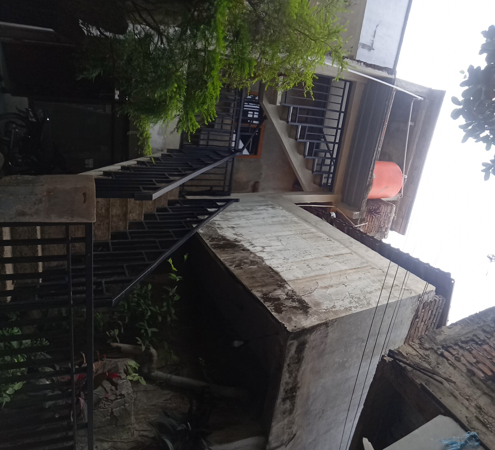

Rumah Tahfidz Asy Syifa merupakan Lembaga yang meyelenggarakan pembelajaran mengenal Al -Qur’an yang bergerak dalam lingkup Pendidikan Al Qur’an dan sosial. Berawal dari banyaknya anak anak Selepas sekolah Dasar malu atau tidak mau lagi mengaji ke masjid / Madrasah dan anak anak yang sangat memerlukan perhatian yang khusus karena memang sistem pembelajarannya harus bersifat privat. Sehingga kami tergerak untuk mendirikan sebuah tempat pembinaan bagi calon calon generasi Qur’ani.
Mulai dari anak anak di sekitar dan berjalan apa adanya dengan ruang pembelajaran seadanya (ruang Tamu), satu demi satu para tetangga menitipkan anak anaknya kepada kami. Dan karena sudah tidak memadai lagi maka kami memanfaatkan Root Top menjadi ruang belajar yang menyenangkan. Alhamdulillah 11 orang anak telah berhasil mutQin juz 30 dalam waktu kurang dari setahun.
Seiring dengan berjalannya waktu tekad kami ingin mewujudkan generasi muslim yang cerdas ,senang mengaji menghapal dan mengamalkan Al Qur’an semakin mendalam dan Alhamdulillah terwujud pada tahun 2020 dengan nama Rumah Tahfidz Asy Syifa.
Merupakan salah satu program lembaga Rumah Tahfidz Asy Syifa, program ini dilaksanakan pada setiap hari jumat

Merupakan salah satu program lembaga Rumah Tahfidz Asy Syifa, program ini dilaksanakan pada setiap 1 Bulan sekali

Merupakan salah satu program lembaga Rumah Tahfidz Asy Syifa, program ini dilaksanakan pada setiap Ahad ke 5

Merupakan salah satu program unggulan dari Lembaga Rumah Tahfidz Asy Syifa, program ini memudahkan peserta untuk belajar Al-Qur`an khususnya Tahsin atau perbaikan bacaan Al-Quran dengan sistem belajar secara pribadi, artinya 1 pengajar membimbing 1 murid (atau lebih sesuai permintaan)
Merupakan salah satu program unggulan dari Lembaga Rumah Tahfidz Asy Syifa, program ini dilaksanakan 1 semester sekali pada saat liburan Sekolah, Programnya mengarah pada pendidikan anak dan mengajarkan kepada anak bahwa menghafal Al-Quran itu menyenangkan dan mudah
Merupakan salah satu program unggulan dari Lembaga Rumah Tahfidz Asy Syifa, program ini dilaksanakan 1 semester sekali pada saat liburan Sekolah, Programnya mengarah pada pendidikan anak dan mengajarkan kepada anak bahwa menghafal Al-Quran itu menyenangkan dan mudah